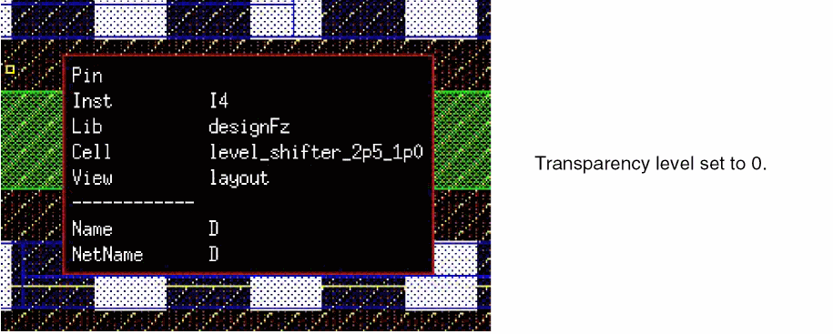

Enabling Information Balloons and Dynamic Measurements
To display object information balloons and dynamic measurement:
-
In the layout window, choose Options – Dynamic Display.
The Dynamic Display form appears. - Select the Show Info Balloon check box to enable information balloons.
-
On the Info Balloon tab, set the following:
- Pause Time: Specify the amount of time before the information balloon will appear when the pointer is over an object. The range is from 0 to 10.
- Fade Time: Specify the amount of time in seconds for the information balloon to fade away after it appears. Valid values are between .001 and 100.
-
Transparency: Specify the transparency of the balloon information box. When set to 0, the box is completely transparent. When set to 100, objects behind the box are not visible. The default is 50.

- Select the Measurement Display On check box to enable dynamic measurement.
- On the Dynamic Measurement tab:
- Click OK.
In Layout XL and higher tiers, dynamic measurement supports the Create, Copy, Move and Stretch commands. When using the Move and Copy commands, dynamic measurement is displayed only in the current cellview. If an object or group of objects are moved or copied to another cellview, dynamic measurement is not displayed beyond the original cellview.
(Virtuoso Photonics Option) In Layout EXL and higher tiers, the Photonics option is also available in the Dynamic Display form. When the Photonics and Show Info Balloon options are selected in the form, information related to photonics object is displayed.
Related Topics
Return to top